О конных походах, в чем их притяжение
Конные поход – это не только удовольствие, это отличная возможность забыть о проблемах
и провести время с максимальной пользой, ведь верховая езда крайне благотворно влияет
на здоровье. Можно отправиться к подножью самой высокой сибирской горы Белухе
и окунуться в воды озера Акеем, или совершить поход на Каракольские озера, возле которых находятся лиственные и кедровые леса, таинственные пещеры и волнующие душу водопады.
А может по вкусу придется поездка на коне в самый живописный район Алтая – к Шавлинским озерам с прозрачной водой, где открывается вид на белоснежные вершины местных гор.
